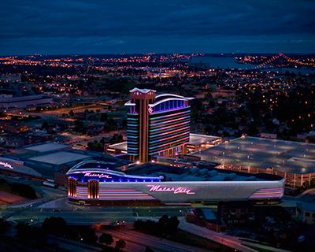
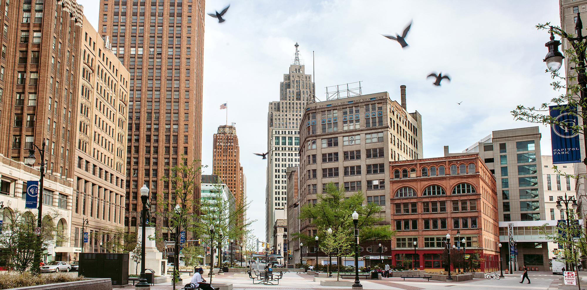
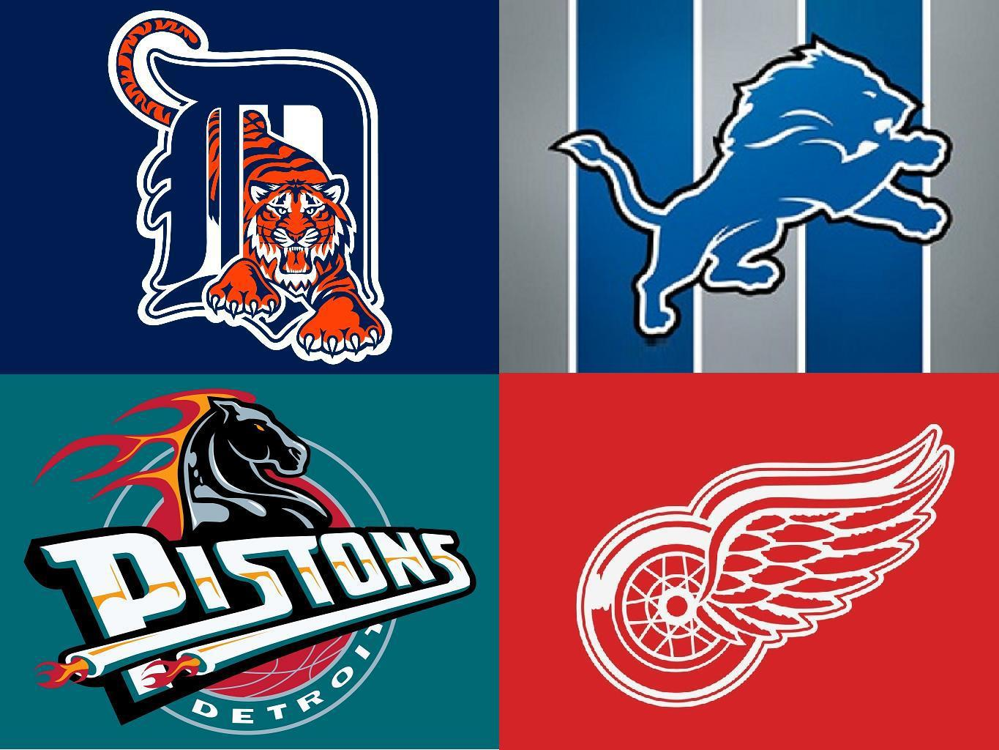

Detroit, Michigan is best known for being "Motor City" with all the vehicles being built there. It is a wonderful city
that has a bad reputation for violence. Being born there I am not as intimidated by all the crime there like most people. So with that being said, let's learn a little more about my hometown.Detroit is known for having very famous casinos. It was one of the first cities to open up a casino. No
matter where you go there will always be a casino in a 5 mile radius. And hey you might even win quite a bit of money. DownTown Detroit is most likely my favorite part of Detroit. There are so many cool shops and you can't
forget about all the delicious restaurants. You have Greek Town, Mexican Town, and Italian Town. You have many options to choose from and they are all delicious. Detroit is also famous for their sports teams. We have the Detroit Lions, (which is a very bad team)
the Detroit Tigers, the Detroit Red Wings, and the Detroit Pistons. All these teams, except the Detroit Lions, were a very good team once upon a time. I think in my opinion though Detroit is best known for making vehicles. It is the place where Henry Ford
built the first Ford vehicle. They also put together many motorcycles like Harley Davidsons. And correct me if I'm pretty sure they still handmake them.